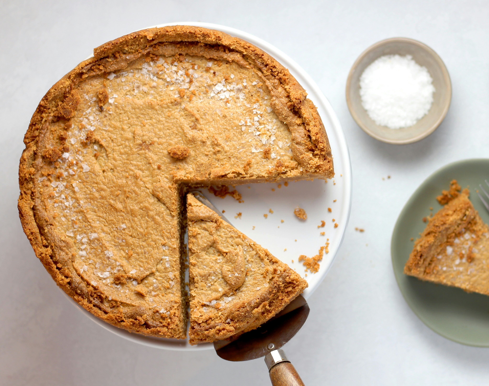

Home
Sweet Potato Pie

Description
Sweet Potato Pie is a dessert made with boiled whole sweet potatoes mashed and mixed with butter, sugar,
milk, eggs, and warm spices like cinnamon, nutmeg, and vanilla extract. The smooth custard filling is
poured into an unbaked pie crust and baked until set, developing a slightly puffed top that settles as
it cools. This pie offers a moist and subtly spiced flavor, with the natural sweetness of the sweet
potatoes enhanced by the creamy texture of the filling.
Ingredients
- 1 (1 pound) sweet potato, with skin
- 1/2 cup butter, softened
- 1 cup white sugar
- 1/2 cup milk
- 2 large eggs
- 1/2 teaspoon ground nutmeg
- 1/2 teaspoon ground cinnamon
- 1 teaspoon vanilla extract
- 1 (9 inch) unbaked pie crust
Steps
- Place whole sweet potato in pot and cover with water; bring to a boil and boil until tender when pierced with a fork, 40 to 50 minutes.
- Preheat the oven to 350 degrees F (175 degrees C).
- Remove sweet potato from the pot and run under cold water.
- Remove and discard skin, break sweet potato flesh apart and place in a bowl.
- Add butter and mix with an electric mixer until well combined.
- Add sugar, milk, eggs, nutmeg, cinnamon, and vanilla; beat on medium speed until mixture is smooth.
- Pour filling into unbaked pie crust.
- Bake in the preheated oven until a knife inserted in the center comes out clean, 55 to 60 minutes.
- Remove from the oven and let cool before serving.